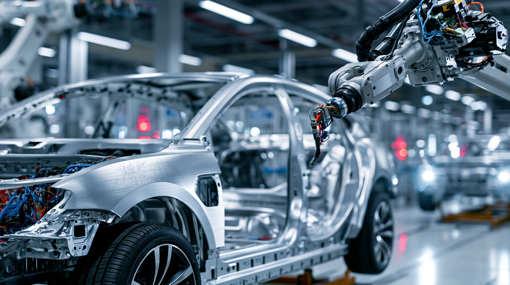
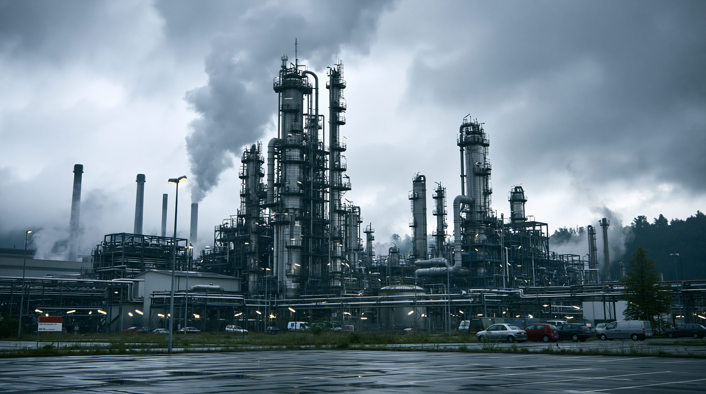
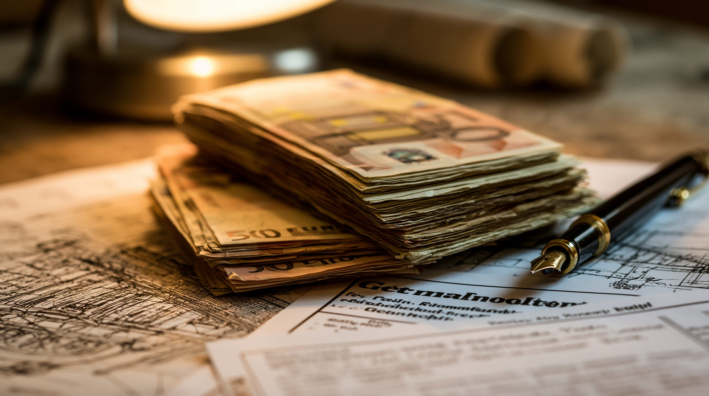

01 核心と問い — 「欧州の優等生」はなぜ失速したか
3年連続の停滞とはどういう事態か。そしてメルツ政権の5000億ユーロ「財政革命」は、エネルギー高・自動車の対中敗北・高コスト体質という構造問題を本当に解けるのか。
「欧州の病人（sick man of Europe）」とは、もともと19世紀のオスマン帝国に貼られたレッテルだった。
2002年、エコノミスト誌はそれをドイツに転用した。しかし当時のシュレーダー政権のハルツ改革で労働市場を改革し、輸出競争力を回復したドイツは、以後20年にわたって欧州最大の経済大国として大陸を率いた。
そのドイツに、いまふたたびそのレッテルが戻ってきた。
2023年のGDP成長率は-0.3%、2024年は-0.2%と2年連続でマイナス。
2025年は+0.3%と辛うじてプラスに転じたが、欧州連合の平均を大きく下回る。
2026年の成長率予測は当初1.0%だったが、2026年4月に0.5%へ半減 した。
3年連続の停滞の背景には、一時的なショックではなく構造的な三重苦 がある。
ロシア産ガス喪失によるエネルギー高、中国での自動車産業の敗北、そして欧州最高水準の高コスト体質。
これら3つの問題が同時に押し寄せ、「輸出立国・製造業立国」というドイツのビジネスモデルそのものを揺るがしている。
3つの構造要因
エネルギー高
ロシア産ガスはドイツのガス供給の55%を占めていた。2022年の供給停止でエネルギー価格が急騰。化学・鉄鋼など製造業の競争力が根本から揺らぎ、工場の国外移転が相次ぐ。
自動車の対中敗北
中国市場でフォルクスワーゲンはBYD（2024年）・吉利（2025年）に抜かれ3位に転落。利益は最盛期の約50億ユーロから2026年には2〜6億ユーロへ激減。対中輸出も2025年に33%減少した。
高コスト体質
自動車産業の時給はドイツが62ユーロに対し、スペイン29ユーロ、ポルトガル20ユーロ。法人税・官僚主義・インフラ老朽化も相まって、「生産の場としての魅力」が急速に失われている。
02 タイムライン — 失速の足跡
2022年2〜9月
ロシア産ガス供給が事実上停止
ロシアのウクライナ侵攻を機に、独ガス供給の55%を占めていたロシア産パイプラインガスが段階的に途絶。エネルギー価格が急騰し、化学・鉄鋼・ガラスなどエネルギー集約型産業が競争力を失い始める。BASFは「欧州でこれ以上コスト競争力を持てない」と表明。
ガス供給の55%が消失
エネルギー集約産業に打撃
2023〜2024年
2年連続のGDP縮小 — 「欧州の病人」再来
2023年-0.3%、2024年-0.2%と2年連続でマイナス成長。欧州の主要国で2年連続縮小は異例だ。フォルクスワーゲン・ボッシュ・ティッセンクルップが大規模なリストラを発表。製造業雇用が過去1年で12.5万人消失した。
欧州主要国で異例の2年連続マイナス
フォルクスワーゲンが1万人超削減発表
2024年
BYDがフォルクスワーゲンを中国市場で逆転
中国EVメーカーのBYDが販売台数でフォルクスワーゲンを抜き、中国市場の首位に躍り出た。フォルクスワーゲンが中国市場の最大手として君臨し続けた30年以上の歴史に終止符が打たれた。フォルクスワーゲンの中国市場での利益はピーク約50億ユーロから急落。
30年以上の首位陥落
中国EV市場で攻守逆転
2025年3月
メルツ政権、債務ブレーキ憲法改正を連邦議会で可決
CDU/CSU・社会民主党の大連立で憲法の「債務ブレーキ（Schuldenbremse）」を改正。国防費はGDP1%超の分を借入制限から除外し、インフラ・気候変動対策などに充てる5000億ユーロの特別基金（12年間）を設立。戦後ドイツの財政規律の大転換と評された。
憲法改正で財政制約を緩和
5000億ユーロ特別基金を設立
2025年
吉利がフォルクスワーゲンを抜き中国市場3位に
中国の吉利汽車が販売台数でさらに上回り、フォルクスワーゲンは中国市場で3位に後退。ドイツの対中自動車輸出は年間33%減（136億ユーロ）と急落し、「中国市場への依存」というドイツ自動車業界の構造がもはや機能しないことが明確になった。
中国市場でさらに後退し3位へ
対中輸出33%減
2026年4月
2026年成長率予測を1%から0.5%へ半減
中東情勢の緊迫化によるエネルギー価格の再騰、アメリカの関税圧力などを受け、主要機関がドイツの2026年成長率予測を一斉に下方修正。当初1.0%だった予測が0.5%へ半減した。ユーロ圏全体のGDP成長率も2025年第4四半期の0.3%から2026年第1四半期の0.2%へ減速。
成長率予測が半減
ユーロ圏全体にも波及
03 6つの視点
カード表示
比較表
「5000億ユーロを投じ、先送りしてきた構造転換を一気に実現する」
核心的主張
債務ブレーキの改正と5000億ユーロの特別基金は、数十年間先送りされてきたインフラ投資と経済の構造転換を一気に実現するための歴史的転換だ。財政出動が民間投資を呼び込み、成長軌道に戻れる。
葛藤と課題
特別基金があっても2026年予算には300億ユーロの財政の穴が残る。エネルギー高や対中敗北は財政出動だけでは解決できない構造問題だという批判に、政府は答え切れていない。
背景： メルツ首相（キリスト教民主同盟）は財政保守派の旗手だったが、経済危機の深刻さから「180度転換」を選んだ。歴史的な政策転換の評価は割れている。
「高コスト体質のまま低価格EVと戦う矛盾は、解消されていない」
核心的主張
中国市場での競争力喪失は認める。しかし1万ユーロ台の低価格EVの開発、中国メーカーとの合弁深化、欧州市場での中国EV参入への関税障壁の活用で巻き返しを図る。
苦境の現実
フォルクスワーゲンは2030年までに3.5万人の削減を計画し、工場閉鎖も俎上に。ボッシュ・ティッセンクルップも数千人規模のリストラを進める。高コスト体質（時給62ユーロ）のまま低価格EVと戦うことの矛盾は解消されていない。
背景： 自動車産業はドイツのGDPの約5%、輸出の約20%、雇用の80万人を支える基幹産業。その凋落はドイツ経済全体の問題だ。
「エネルギー価格差がある限り、欧州での大規模生産は非合理だ」
核心的主張
ドイツのエネルギーコストはアメリカや中国の2〜3倍。財政出動がいくら増えても、この価格差がある限り欧州での大規模生産は非合理だ。工場を中国や北米に移す以外に選択肢がない。
実際の行動
BASFはルートヴィヒスハーフェン本社工場で数千人を削減し、中国・広東省への投資を拡大。ランクセス（Lanxess）も数千人規模のリストラ。ミシュランとグッドイヤーはドイツ工場を閉鎖・縮小した。
背景： ドイツの化学・鉄鋼・ガラス産業は戦後の競争力の源泉だった。その国外流出は「脱工業化」を意味し、取り返しのつかない損失になりかねない。
「中国EVの競争力は補助金ではなく、技術力・規模の経済・サプライチェーンの優位によるものだ」
核心的主張
欧州連合の対中EV関税は保護主義だ。BYD・吉利・蔚来（NIO）はドイツメーカーに代わり世界のEV市場を主導する。
ドイツへの影響力
中国はドイツ最大の貿易相手国（2024年）であり続ける。ドイツが中国を失えば輸出の約7%が消える。一方でフォルクスワーゲン・BMWなど独大手は中国での生産・合弁を維持しており、「切り離せない」相互依存が続く。
背景： ドイツへの貿易黒字（輸出超過）は中国にとっても重要。全面的な関係悪化は望んでいないが、自国EVの市場拡大には欧州連合の障壁を崩したい。
「ドイツより北米で作る方が合理的だと、ドイツ企業自身が証明している」
核心的主張
インフレ抑制法（IRA）の補助金と低エネルギーコストを武器に、ドイツの製造業を北米に誘致する。高コスト・高税負担のドイツより、アメリカで作る方が合理的だとドイツ企業自身が証明している。
関税圧力
トランプ政権の対欧州関税はドイツの輸出に直接ダメージを与える。ドイツの対米輸出は自動車・機械が中心であり、追加関税はすでに苦境にある製造業にさらなる打撃を与えている。
背景： IRAはドイツの化学・半導体・EV電池メーカーを北米に引き寄せる効果を持つ。一方でNATOの文脈では同盟国であり、ドイツの経済衰退はヨーロッパの不安定化につながりアメリカにとってもマイナスだ。
「ドイツが落ちれば欧州が落ちる。しかし財政出動の恩恵にも期待がかかる」
核心的主張
欧州連合GDP最大国の停滞はユーロ圏全体の成長を引き下げている。一方で、ドイツの5000億ユーロの財政出動が内需を拡大すれば、輸出依存の周辺国にとっては恩恵にもなりうる。
イタリアの悩み
イタリアは2026年成長率をすでに0.6%へ下方修正。ドイツ経済との連動が深いため、北部イタリアの製造業は独の不況が直撃する。一方でドイツの財政保守主義が緩めば、欧州連合全体で財政規律が緩む懸念も残る。
背景： 欧州連合GDP成長率は2025年第4四半期0.3%→2026年第1四半期0.2%へ減速。ユーロ圏の牽引役たるドイツの回復は、欧州連合全体の最優先課題だ。
立場
基本スタンス
最大の主張
課題・懸念
ドイツ政府 財政出動で構造転換 5000億ユーロ基金が起爆剤 300億ユーロの予算の穴 自動車業界 低価格EVで巻き返し 中国合弁・欧州関税で防衛 高コスト体質が変わらない エネルギー集約産業 ドイツ離れ・国外移転 エネルギー高では経営不能 一度出た工場は戻らない 中国 最大の市場・最大の競合 EV技術力で正当に勝利 欧州連合の対中関税 アメリカ IRAで企業誘致・関税圧力 北米生産の方が合理的 欧州不安定化は米にも害 欧州連合・他加盟国 波及警戒・財政出動に期待 独回復は欧州の最優先課題 財政規律緩和の懸念

フォルクスワーゲンの工場で稼働する自動車組立ライン。精密な自動化設備は世界最高水準だが、
時給62ユーロという労働コストはスペインの2倍以上、ポルトガルの3倍だ。コスト競争力の乖離が、
ドイツ製造業の根本的な弱点として浮かび上がっている。※イメージ画像（生成AI）
04 データ・統計
ドイツGDP成長率の推移（%）
2023・2024年の2年連続マイナスは欧州主要国で異例。
2026〜2027は予測値（ゴールドマン・サックス、欧州委員会等の平均）。
出典：IMF・欧州委員会・ドイツ連邦経済省
フォルクスワーゲンの中国事業利益（推計、十億ユーロ）
ピーク時（2018〜2019年ごろ）の約50億ユーロから2026年は2〜6億ユーロへ激減。
BYD・吉利との競争激化とEV転換の遅れが主因。
出典：フォルクスワーゲン各年次報告・Reuters
自動車産業の労働コスト国際比較（時給）
ドイツはスペインの2倍以上、ポルトガルの3倍。中国や東欧との差はさらに大きい。出典：欧州自動車工業会・各種報道
注目の数字
€5,000億
インフラ・気候変動転換の特別基金（12年間）
-33%
対中自動車輸出の減少（2025年、136億ユーロ）
55%
停止前のドイツのガス供給に占めるロシア産の割合

ドイツ最大の化学メーカーBASFはルートヴィヒスハーフェンの本社工場で数千人を削減し、中国・広東省への投資を拡大した。
エネルギー価格の高止まりが続く限り、化学・鉄鋼などのエネルギー集約産業はドイツで生産する競争力を失い続けると専門家は指摘する。※イメージ画像（生成AI）
05 深掘り — メルツの「財政革命」は構造問題を解けるか
5000億ユーロの賭け — 財政革命の論理
メルツ政権の「財政革命」の論理はシンプルだ。長年の財政節約で先送りされてきたインフラ・デジタル化・エネルギー転換への投資を一気に加速させれば、民間投資を呼び込み、経済の体質を変えられる——。
5000億ユーロの特別基金は12年かけて使われる計画で、インフラ・気候変動転換基金に1000億ユーロ、州政府向けに1000億ユーロが充てられる。また国防費はGDP1%超の部分を借入制限から除外し、同盟国への約束を果たせる規模に拡大する。
基金の限界 — 300億ユーロの穴と構造問題
しかし批判者は「5000億ユーロがあっても2026年の予算にはなお300億ユーロの財政の穴がある」と指摘する。そして根本的な問いは、財政出動がエネルギー高・対中敗北・高コスト体質という三重苦を解けるかどうかだ。
エネルギー高は基金が積まれても、再生可能エネルギーへの転換が完了するまで続く。対中自動車敗北は、ドイツ車が中国消費者の心をもう一度掴むか、新市場（東南アジア・インド・アフリカ）を開拓するかどうかにかかっており、財政とは別次元の問題だ。
高コスト体質は、労働市場の柔軟化や官僚主義の削減という「改革」なしには変えられないが、これは政治的に難しい。
ユーロ圏・イタリアへの波及 — 「独の病は欧州の病」
ドイツの失速はユーロ圏全体に波及している。ユーロ圏のGDP成長率は2025年第4四半期の0.3%から2026年第1四半期の0.2%へと低下した。イタリアは2026年成長率を0.6%へ下方修正しており、北部イタリアはドイツの製造業サプライチェーンと深く結びついているため直撃を受ける。
一方で、ドイツの5000億ユーロの財政出動が内需を押し上げれば、輸出に頼る周辺国（フランス・オランダ・チェコ等）には恩恵になるという見方もある。「ドイツがくしゃみをすればユーロ圏が風邪をひく」という構図は変わっていない。
ドイツの問題の根底にあるのは、「輸出立国・製造業立国」という成功モデルそのものが通用しなくなりつつあるという現実だ。
安価なロシア産ガスと巨大な中国市場という「二つの特需」に依存した20年のビジネスモデルは終わった。
財政革命が「歴史的な構造転換の起爆剤」になるか、「構造問題を先送りした高価な時間稼ぎ」に終わるかは、今後2〜3年で問われることになる。

メルツ首相が押し通した債務ブレーキの改正は、戦後ドイツの財政規律の象徴だった憲法条文を書き換えるものだった。
「欧州の優等生」が「財政の異端児」になる歴史的転換の意味を、欧州各国は固唾を飲んで見守っている。※イメージ画像（生成AI）
06 情報源・参考メディア
Goldman Sachs Global Investment Research
ドイツ経済の2026年成長率予測の下方修正、ユーロ圏への波及分析
【国際投資銀行・マクロ経済分析】
欧州委員会（European Commission）
2026年春の欧州経済予測（European Economic Forecast Spring 2026）。ユーロ圏・各加盟国の成長率予測
【欧州連合の公式経済統計】
Clean Energy Wire（CLEW）
ドイツのエネルギー転換・脱ロシア産ガスの詳細データと産業への影響分析
【ドイツ・エネルギー専門メディア】
Reuters・Euronews
フォルクスワーゲン・BASF・ボッシュ等の人員削減・工場閉鎖の報道、対中輸出データ
【国際ニュース速報・欧州経済報道】
ドイツ連邦経済省（BMWK）
ドイツ政府の経済政策・債務ブレーキ改正の一次情報、5000億ユーロ特別基金の公式内訳
【ドイツ政府公式】
Bruegel（ブリューゲル研究所）
「Germany's Fiscal Turn」（2025）。財政革命の評価・限界・欧州連合への波及を分析したブリュッセルのシンクタンクの論考
【欧州連合・欧州経済政策シンクタンク】